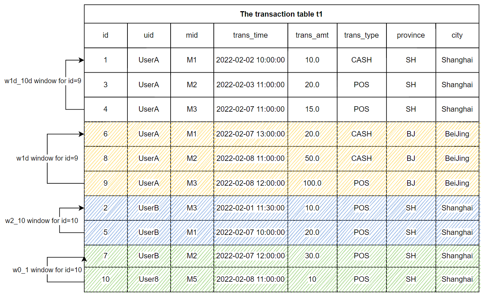

SQL for Feature Extraction (Part 1)
Contents
SQL for Feature Extraction (Part 1)#
1. What is the Feature Engineering of Machine Learning#
A real-world machine learning application generally includes two main processes, namely Feature Engineering and Machine Learning Model (hereinafter referred to as Model). We must know a lot about the model. For example, from the classic logistic regression and decision tree models to the deep learning models, we all focus on how to develop high-quality models. We may pay less attention to feature engineering. However, you must have heard a famous saying that data and features determine the upper limit of machine learning, while models and algorithms only approach this upper limit. It can be seen that we have long agreed on the importance of Feature Engineering.
In one sentence, Feature Engineering is defined as: using domain knowledge to extract useful feature information from the original data. It emphasizes domain knowledge, that is to say, feature extraction is not a standardized process, but has different experience and methodology based on different scenarios. For a simple example, for the real-time recommendation system, the original data may only be the search keywords entered by users, such as “washing machine”, and the corresponding user and commodity data tables stored in the database. In order to make better real-time recommendation, the following more meaningful features can be produced:
The home appliance brand that the user purchased the most in the past year
The average consumption level of the user in the past three years
In the past hour, the discount on the platform has been more than 70%, which is in line with the top three washing machine models purchased by users in this user gender and age group
As can be seen from the above example, features can be made quite complex and can have very high timeliness. So how to extract good features according to specific scenes is what data scientists need. At the same time, they need to be equipped with powerful tools to do feature engineering well. This tutorial will introduce you to how to do feature engineering in practice.
2. Feature Engineering Development Tool – OpenMLDB#
Before introducing the feature engineering algorithm, it is necessary to understand the development and deployment tools of feature engineering. According to experience, we roughly categorize them and summarize their advantages and disadvantages.
Development Tool |
Usability |
Functional Support |
Engineering Effort |
|---|---|---|---|
Python |
Low; widely used by data scientists |
The Python programming is very flexible and can be used to implement any functions. |
Difficult. Python programs are generally inefficient and their performance generally cannot meet the requirements of online real-time computing. In addition, users need to solve production features such as high availability. |
Relational database |
Medium; development based on SQL |
There is no specific optimization for feature engineering, and the implementation for some features using the standard SQL is complex and inefficient. |
Acceptable. However, the functions that are not well supported by standard SQL may not meet the needs of production environment. |
The hybrid approach, such as using Python for offline, and database or C++ for online |
The development cost is very high and requires two development skillsets. |
Based on development and customization, the functional requirements can be met. |
Acceptable but costly. In addition to the development and operation cost, it is also necessary to verify the online and offline consistency. |
OpenMLDB |
Medium; development based on SQL |
The standard SQL is extended and highly optimized to fully support feature engineering workload. |
Low cost and high efficiency. Based on SQL development with efficient design, SQL can be directly deployed to online, which naturally ensure the online and offline consistency. |
From the above table, we can see that OpenMLDB has unique advantages for feature engineering in production. Especially for real-time feature extraction based on time-series data, OpenMLDB has a lot of targeted optimization. If you want to learn more about OpenMLDB, you can visit our GitHub repo of OpenMLDB.
3. From 0 to 1, Feature Engineering Practice#
We will introduce the common processing methods of feature engineering in two parts. This part will focus on single table feature processing, and the next part will focus on more complex multi-table feature computing. This tutorial uses the anti-fraud commonly used in the financial field as an actual case to describe.
Note that if you want to run the SQL illustrated in this tutorial, please follow the following two steps to prepare：
It is recommended to use docker image to run this tutorial under the standalone version. Refer to OpenMLDB Quick Start for image pull and CLI operation mode. If using the cluster version, please use the offline mode (
SET @@execute_mode='offline'). The normal online mode under the cluster version’s CLI only supports the simple data preview function, so most of the SQL in the tutorial cannot run.All data related to this tutorial can be downloaded here
3.1.1. Primary and Secondary Tables#
Primary Table is the main data table of feature extraction. Intuitively, it can be understood that the primary table is a data table with label columns required for model training. In the process of feature engineering, features will be extracted on each row of the primary table to finally generate the corresponding Feature Table. For example, the following user transaction table (hereinafter referred to as data table t1) is the primary table of the case described in this tutorial.
Field |
Type |
Description |
|---|---|---|
id |
BIGINT |
Sample ID, each sample has a unique ID |
uid |
STRING |
User ID |
mid |
STRING |
Merchant ID |
cardno |
STRING |
Card Number |
trans_time |
TIMESTAMP |
Transaction Time |
trans_amt |
DOUBLE |
Transaction Amount |
trans_type |
STRING |
Transaction Type |
province |
STRING |
Province |
city |
STRING |
City |
label |
BOOL |
Sample label, true|false |
In addition to the primary table, there may also be data tables in the database that store relevant auxiliary information, which can be spliced with the primary table through the join operation. These tables are called Secondary Tables (note that there may be multiple secondary tables). For example, we can have a secondary table to store the merchant flow history. In the process of feature engineering, more valuable information can be obtained by splicing the information of primary and secondary tables. The feature engineering over multiple tables will be introduced in detail in the next part of this series.
3.1.2. Types of Features#
Before discussing the details of feature construction in depth, we can categorize the features commonly used in machine learning. From the perspective of building feature data sets and aggregation methods, there are four common features in machine learning:
Single-row features on the primary table: Computing expressions and functions for one or more columns on the primary table.
Time-series features on the primary table: Building sliding time-series windows for the primary table and performing aggregate functions over the windows.
Single-row features on multiple tables: The primary table joins the secondary tables, and then it performs the single-row features on the joined table.
Time-series features on multiple tables: A row of the primary table matches multiple rows from a secondary table, and then it performs time-series features on the matched rows.
The first part of this tutorial will focus on the single-row and time-series features on the primary table. The next part will specifically introduce the single-row and time-series features on multiple tables.
3.2. Single-Row Features on the Primary Table#
In-line Extraction
Some columns of the main table can be directly used as features to participate in model training.
SELECT uid, trans_type FROM t1;
Functions or UDFs
Features can be extracted through built-in functions or UDFs, for example, days, hours and minutes are extracted as features.
SELECT
day(trans_time) as f_trans_day,
hour(trans_time) as f_trans_hour,
minute(trans_time) as f_trans_minute FROM t1;
Other related functions also include numerical feature calculation (such as ceiling) and string feature calculation (such as substr).
3.3. Time-Series Features on the Primary Table#
In many scenarios, the more commonly used feature construction method is based on the feature construction of time window. For example, transaction data and user behavior are time-series data with time stamp. Two steps need to be completed to construct the time-series features on the primary table:
Step 1: Define time windows
Step 2: Construct features based on time windows
3.3.1. Step 1: Define Window#
We can define a specific window size either through the time interval (such as a month) or through the number of rows in the window (such as 100). The most basic definition of timing window:
window window_name as (PARTITION BY partition_col ORDER BY order_col ROWS_RANGE｜ROWS BETWEEN StartFrameBound AND EndFrameBound)
Among them, the important parameters include：
PARTITION BY partition_col: Indicates that the window is in accordance withpartition_colcolumn groupingORDER BY order_col: Indicates that the window is in accordance withorder_colsorting columnsROWS_RANGE: Indicates that the window slides by time；ROWSIndicates that the window slides by the number of rowsStartFrameBound: Represents the upper bound of the window. In OpenMLDB, we can generally define the upper bound of the window as:UNBOUNDED PRECEDING: No upper bound.time_expression PRECEDING: If it is a time window, you can define a time offset. For example, ‘30d predicting’ means that the upper bound of the window is the time of the current line - 30 days.number PRECEDING: If it is the number of rows, you can define the number of rows offset. For example, ‘100 predicting’ indicates the first 100 lines of the current line whose upper bound is.
EndFrameBound: Represents the lower bound of the time window. In OpenMLDB, we can generally define the lower bound of the window as:CURRENT ROW： Current rowtime_expression PRECEDING: A certain time offset, such as’ 1D forecasting ‘. This indicates that the lower bound of the window is the time of the current line - 1 day.number PRECEDING: If it is the number of rows, you can define the number of rows offset. For example,1 PRECEDINGrepresents the first row of the current row whose upper bound of the window is.
When configuring the upper and lower boundaries of the window, please note:
At present, OpenMLDB cannot support the time after the current row as the upper and lower bounds. For example,
1d FOLLOWING. In other words, we can only deal with the historical time window. This also basically meets most of the application scenarios of feature engineering.Lower bound time of OpenMLDB must be > = Upper bound time
The number of lower bound entries of OpenMLDB must be < = The number of upper bound entries

The following example shows that for the transaction table t1 shown above, we have two windows defined by time and two defined by number of rows. Note that the following window definitions are not a completed SQL. We will add aggregate functions later to complete runnable SQL.
w1d: the window within the most recent day
-- The window of the user's most recent day containing the rows from the current to the most recent day
window w1d as (PARTITION BY uid ORDER BY trans_time ROWS_RANGE BETWEEN 1d PRECEDING AND CURRENT ROW)
The w1d window shown in the above figure is for the row with id=9, and the w1d window contains three rows (id=6, id=8, id=9). These three rows fall within the time window [2022-02-07 12:00:00, 2022-02-08 12:00:00] .
w1d_10d: the windows from 1 day ago to the last 10 days
-- The windows from 1 day ago to the last 10 days
window w1d_10d as (PARTITION BY uid ORDER BY trans_time ROWS_RANGE BETWEEN 10d PRECEDING AND 1d PRECEDING)
The window w1d_10d for the row with id=9 contains three rows, which are with id=1, id=3 and id=4. These three rows fall within the time window of [2022-01-29 12:00:00, 2022-02-07 12:00:00]。
w0_1: the window contains the last 0 ~ 1 rows
-- The window contains the last 0 ~ 1 rows, including the previous line and the current line
window w0_1 as (PARTITION BY uid ORDER BY trans_time ROWS BETWEEN 1 PRECEDING AND CURRENT ROW)
The window w0_1 for the row id=10 contains 2 rows, which are id=7 and id=10。
w2_10: the window contains the last 2 ~ 10 rows
-- The window contains the last 2 ~ 10 rows
window w2_10 as (PARTITION BY uid ORDER BY trans_time ROWS BETWEEN 10 PRECEDING AND 2 PRECEDING)
The window w2_10 for the row id=10 contains 2 rows, which are od=2 and id=5.
3.3.2. Step 2: Construct Features Based on Time Window#
After defining the time window, we can apply aggregate functions over windows.
Aggregate Functions
The following aggregate functions are currently supported: count(), sum(), max(), min(), avg()
SELECT
-- Total transaction amount in the last 30 days
sum(trans_amt) over w30d as w30d_sum_trans_amt,
-- Maximum transaction amount in the last 30 days
max(trans_amt) over w30d as w30d_max_trans_amt,
-- Average single transaction amount in the last 30 days
avg(trans_amt) over w30d as w30d_avg_trans_amt,
-- Total number of transactions in the last 30 days
count(trans_amt) over w30d as w30d_count_trans_amt
FROM t1
window w30d as (PARTITION BY uid ORDER BY trans_time ROWS_RANGE BETWEEN 30d PRECEDING AND CURRENT ROW);
Aggregate Functions with Filtering
First, filter the data set according to the conditions, and then apply the aggregate functions. Such functions are defined as xxx_where:
xxx_where(col, filter_condition) over w
col：The column to be applied the aggregate function.filter_condition：Filter condition expression.
Currently the supported functions are:count_where, sum_where, avg_where, max_where, min_where .
Relevant examples are as follows:
SELECT
-- Total POS transaction amount in the last 30 days
sum_where(trans_amt, trans_type = "POS") over w30d as w30d_sum_pos_trans_amt,
-- Maximum POS transaction amount in the last 30 days
max_where(trans_amt, trans_type = "POS") over w30d as w30d_max_pos_trans_amt,
-- Average single POS transaction amount in the last 30 days
avg_where(trans_amt, trans_type = "POS") over w30d as w30d_avg_pos_trans_amt,
-- Total number of POS transactions in the last 30 days
count_where(trans_amt, trans_type = "POS") over w30d as w30d_count_pos_trans_amt
FROM t1
window w30d as (PARTITION BY uid ORDER BY trans_time ROWS_RANGE BETWEEN 30d PRECEDING AND CURRENT ROW);
Aggregate Functions with Grouping
Data is grouped first, and then applied with aggregate functions. The results are saved as a string "k1:v1,k2:v2,k3:v3".
Such functions are defined as xxx_cate:
xxx_cate(col, cate) over w
col: The column to be applied the aggregate function.cate: The column for grouping.
Currently the supported functions are: count_cate, sum_cate, avg_cate, max_cate, min_cate
Relevant examples are as follows:
SELECT
-- Total number of transactions in each city in the last 30 days, "beijing:10,shanghai:3"
count_cate(trans_amt, city) over w30d as w30d_city_count_trans_amt,
-- Total transaction volume of each city in the last 30 days, "beijing:100,shanghai:30"
sum_cate(trans_amt, city) over w30d as w30d_city_sum_trans_amt,
-- Average transaction volume of each city in the last 30 days, "beijing:10,shanghai:10"
avg_cate(trans_amt, city) over w30d as w30d_city_avg_trans_amt,
-- Maximum transaction volume of each city in the last 30 days, "beijing:30,shanghai:15"
max_cate(trans_amt, city) over w30d as w30d_city_max_trans_amt,
-- Minimum transaction volume of each city in the last 30 days, "beijing:5,shanghai:5"
min_cate(trans_amt, city) over w30d as w30d_city_max_trans_amt
FROM t1
window w30d as (PARTITION BY uid ORDER BY trans_time ROWS_RANGE BETWEEN 30d PRECEDING AND CURRENT ROW);
Aggregate Functions with Filtering and Grouping
First, filter the rows according to conditions; then, group the data set according to a column; and finally apply the aggregate functions. The results are saved as a string"k1:v1,k2:v2,k3:v3".
Such functions are define as xxx_cate_where:
xxx_cate_where(col, filter_condition, cate) over w
col：The column to be applied the aggregate function.filter_condition：Filter condition expression.cate: The column for grouping.
Currently, the supported statistical functions of grouping and aggregation after filtering are:count_cate_where, sum_cate_where, avg_cate_where, max_cate_where, min_cate_where
Relevant examples are as follows:
SELECT
-- Number of POS transactions in each city in the last 30 days, "beijing:5,shanghai:2"
count_cate_where(trans_amt, trans_type = "POS", city) over w30d as w30d_city_count_pos_trans_amt,
-- Total POS transactions by city in the last 30 days, "beijing:60,shanghai:25"
sum_cate_where(trans_amt, trans_type = "POS", city) over w30d as w30d_city_sum_pos_trans_amt,
-- Average POS transaction volume of each city in the last 30 days, "beijing:12,shanghai:12.5"
avg_cate_where(trans_amt, trans_type = "POS", city) over w30d as w30d_city_avg_pos_trans_amt,
-- Maximum POS turnover of each city in the last 30 days, "beijing:30,shanghai:15"
max_cate_where(trans_amt, trans_type = "POS", city) over w30d as w30d_city_count_pos_trans_amt,
-- Minimum POS transaction volume of each city in the last 30 days, "beijing:5,shanghai:10"
min_cate_where(trans_amt, trans_type = "POS", city) over w30d as w30d_city_count_pos_trans_amt
FROM t1
window w30d as (PARTITION BY uid ORDER BY trans_time ROWS_RANGE BETWEEN 30d PRECEDING AND CURRENT ROW);
Frequency Statistics
We make frequency statistics for a given column.
fz_top1_ratio：Find the ratio of the maximum count of a category in the window to the total count of the window.
SELECT
-- Ratio of transactions in cities with the largest number of transactions in the last 30 days
fz_top1_ratio(city) over w30d as top_city_ratio
FROM t1
window w30d as (PARTITION BY uid ORDER BY trans_time ROWS_RANGE BETWEEN 30d PRECEDING AND CURRENT ROW);
fz_topn_frequency(col, top_n): Find the top_n categories with the highest frequency in the window
SELECT
-- Two cities with the largest number of transactions in the last 30 days, "beijing,shanghai"
fz_topn_frequency(city, 2) over w30d as top_city_ratio
FROM t1
window w30d as (PARTITION BY uid ORDER BY trans_time ROWS_RANGE BETWEEN 30d PRECEDING AND CURRENT ROW);